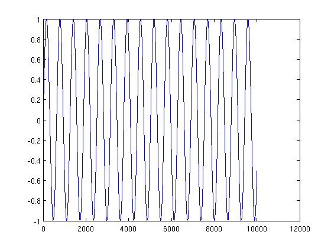
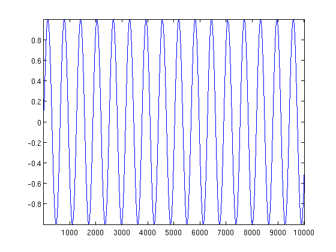
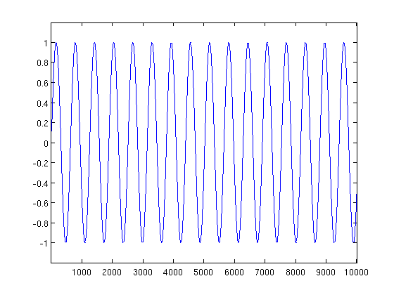

fn_axis
Set a nice range to axes
Contents
Syntax
[ax =] fn_axis([ha,]'tight|image|tightimage',sidefactor,'y0')
Input
- flag 'tight' stretch the axis as much as possible
'image' set an equal ratio between x and y
'tightimag' stretch the axis as much as possible, while
maintaining an equal ratio between x and y
- sidefactor scalar or 2-elements vector >1 but close to one: the
difference with 1 indicates the small gap to leave to
the side
- 'y0' flag set ymin to 0Example
A typical plotting command that results in an uggly automatic range.
plot(sin(0:.01:100))
Matlab '|axis tight|' fixes it to some extent, but now the range is too tight!
axis tight
 fn_axis function allows to be "maximally tight" for x and more visually pleasant for y.
fn_axis('tight',[1 1.2])
 Source
Thomas Deneux
Copyright 2010-2012